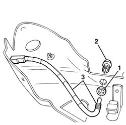

7045M30 LED signalling front seat HEATING, left or right - R.R.
- Path
- Procedures > 70 FITTINGS > 7045 FRONT SEATS > 7045M front seat handling > 7045M30 LED signalling front seat HEATING, left or right - R.R.
- Kind
- repair procedure (removal / refitting; the operation number is the code)
- Applies to
- engines: 3.2 V6; all production periods
- Interactive page
- https://sloeber94.github.io/elrnDB-a156/en/#/3238908
Applies to: engines: 3.2 V6; all production periods; only with equipment: GTA
 Removing
Removing
 Refitting
Refitting7045A10 l/h or r/h front seat (one) - r+r
1. Undo the nut.
2. Undo the support bush.
3. Keep the LED and the cable.

Applies to: engines: 3.2 V6; all production periods; only with equipment: GTA
Refitting
RemovingCheck that the LED and the cable are not damaged.
Position the LED, tighten the bush and lock the nut.